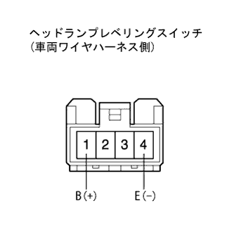
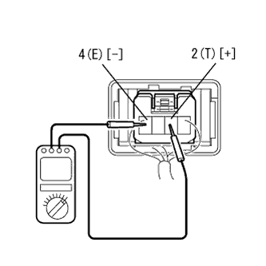
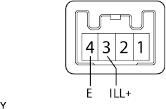

Headlight Leveling Switch Inspection |
| 1. Inspect Headlight Leveling Switch |
Measure the voltage.
Disconnect the connector.
 |
Using SST (Toyota electrical tester), measure the voltage between terminals 1 (B) and 4 (E) of the vehicle side wire harness connector. (Voltage A)
Connect the connector.
 |
Using SST (Toyota electrical tester), measure the voltage between connector terminals 2 (T) and 4 (E) from the back side of the connector when the headlight leveling switch is operated. (Voltage B)
Divide voltage B by voltage A to calculate the voltage ratio.
| Switch Position | Voltage Ratio (%) |
|---|---|
| 0 | 82.0±3 |
| (0.5) | 76.1±3 |
| 1 | 70.2±3 |
| (1.5) | 64.3±3 |
| 2 | 58.4±3 |
| (2.5) | 52.5±3 |
| 3 | 46.6±3 |
| (3.5) | 40.7±3 |
| 4 | 34.8±3 |
| (4.5) | 28.9±3 |
| 5 | 23.0±3 |
 |
LED Illumination Inspection
Check the illumination condition of the LED when battery voltage is applied to the connector terminals.
| Battery connection | Specified Condition |
|---|---|
| Battery positive (+) → 3 (ILL+) Battery negative (-) → 4 (E) | Comes on |